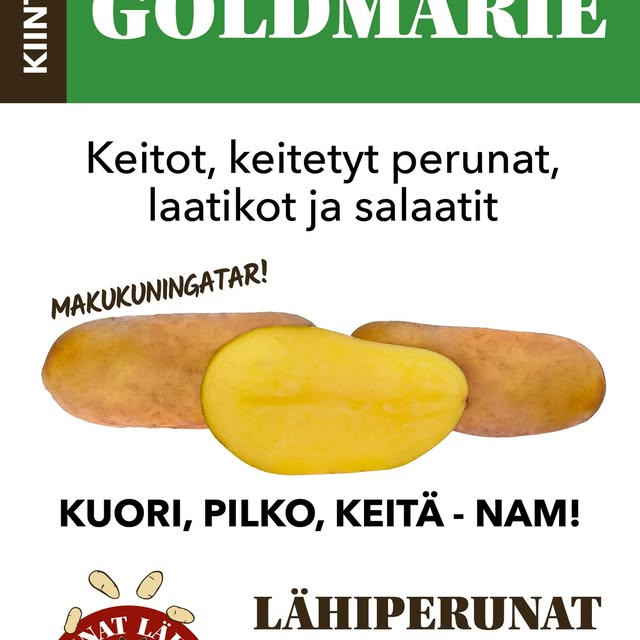
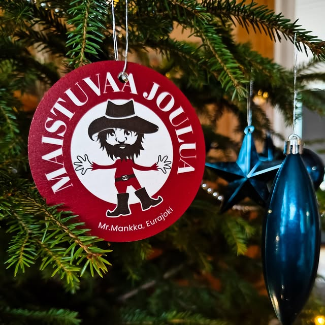
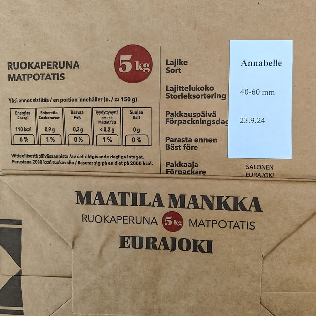
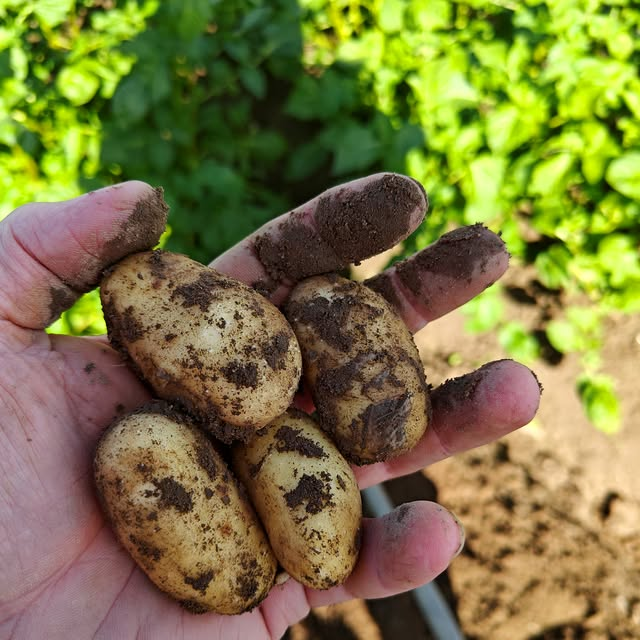

Eurajoki, Satakunta Eurajoki, Satakunta Eurajoki, Satakunta
Maatila Mankka kasvattaa laadukkaita perunalajikkeita Eurajoen kunnassa. Annabelle, Helmi ja Vindika — jokainen omalla persoonallaan, kaikki läheltä. Maatila Mankka odlar högkvalitativa potatisorter i Eurajoki. Annabelle, Helmi och Vindika — var och en med sin personlighet, alla från närbelägna fält. Maatila Mankka grows quality potato varieties in Eurajoki. Annabelle, Helmi and Vindika — each with its own character, all from nearby fields.
Tutki lajikkeet Utforska sorterna Explore varietiesMyydään S-marketeissa Eurajoella, Äyhöllä ja Kehätiellä Säljs på S-marketer i Eurajoki, Äyhö och Kehätie Sold at S-markets in Eurajoki, Äyhö and Kehätie
Jokaisella lajikkeella on oma luonteensa ja parhaiten sopiva käyttötarkoituksensa. Kaikki kasvatettu Mankalla samalla huolella. Varje sort har sin egen karaktär och sitt bästa användningsområde. Alla odlade med samma omsorg på Mankka. Each variety has its own character and the use it suits best. All grown with the same care at Mankka.
Pitkä, kellertävä ja silkkisen kiinteä — Annabelle on varhainen suosikki, joka sopii erinomaisesti keittämiseen ja salaatteihin. Ohut kuori, pähkinäinen maku. Lång, gulaktig och silkigt fast — Annabelle är en tidig favorit, utmärkt för kokning och sallader. Tunn skal, nötig smak. Long, yellowish and silky firm — Annabelle is an early favourite, excellent for boiling and salads. Thin skin, nutty flavour.
Pyöreä, puhtaan valkoinen ja mieto maultaan — Helmi on arjen luotettava, joka toimii niin soseessa kuin uuniperunana. Ohut kuori, helppo kuoria. Rund, rent vit och mild i smaken — Helmi är vardagens pålitliga sort som fungerar både i mos och som ugnspotatis. Tunn skal, lätt att skala. Round, clean white and mild in flavour — Helmi is the everyday reliable, working equally well mashed or baked. Thin skin, easy to peel.
Tiivis ja maanläheinen — Vindika säilyy pitkään ja pitää muotonsa kypsentäessä. Erinomainen paahtamiseen, keitoissa ja friteeraukseen. Kompakt och jordnära — Vindika håller länge och behåller sin form under tillagning. Utmärkt för rostning, soppor och fritering. Dense and earthy — Vindika keeps well and holds its shape when cooked. Excellent for roasting, soups and frying.
Maatila Mankka tuottaa perunaa Eurajoen kunnassa, Satakunnassa. Tilan toiminta perustuu yksinkertaiselle ajatukselle: laadukasta, paikallista ruokaa kohtuulliseen hintaan, pienellä hiilijalanjäljellä. Maatila Mankka producerar potatis i Eurajoki, Satakunta. Gårdens verksamhet bygger på en enkel idé: kvalitetsmat från trakten till ett rimligt pris, med litet koldioxidavtryck. Maatila Mankka grows potatoes in Eurajoki, Satakunta. The farm's work is built on a simple idea: quality local food at a fair price, with a small carbon footprint.
Perunat toimitetaan suoraan lähialueen S-marketteihin. Lyhyt matka pellolta hyllyyn tarkoittaa tuorempaa tuotetta ja pienempää kuljetustaakkaa. Kotimainen peruna on edullinen, ravitseva ja monipuolinen raaka-aine — ja se kannattaa ostaa läheltä. Potatisen levereras direkt till S-marketerna i närområdet. En kort väg från åker till hylla innebär en färskare produkt och en lägre transportbörda. Inhemsk potatis är ett prisvärt, näringsrikt och mångsidigt råvaruval — och det lönar sig att köpa det lokalt. The potatoes are delivered directly to nearby S-markets. A short journey from field to shelf means a fresher product and a lower transport footprint. Finnish potato is an affordable, nutritious and versatile ingredient — and it's worth buying it local.
Maatila Mankan perunat toimitetaan suoraan tilalta kolmeen S-markettiin Eurajoen alueella. Tarkemmat tuotesaatavuudet kannattaa tarkistaa kaupan omasta valikoimasta. Maatila Mankas potatisar levereras direkt från gården till tre S-marketer i Eurajokiregionen. Kontrollera den exakta tillgängligheten i butikens sortiment. Maatila Mankka's potatoes are delivered directly from the farm to three S-markets in the Eurajoki area. Check the store's current stock for exact product availability.
Saatavuus vaihtelee sesongin ja sadon mukaan. Lisätietoa suoraan tilalta Facebookin kautta. Tillgängligheten varierar beroende på säsong och skörd. Mer information direkt från gården via Facebook. Availability varies by season and harvest. For more info contact the farm directly via Facebook.
Pellolta suoraan lähikauppaan — turha kuljetus jää pois, tuote on tuoreempaa ja hiilijalanjälki pienempi kuin kauempaa tuoduilla perunoilla. Från åker direkt till närmaste butik — onödig transport uteblir, produkten är färskare och koldioxidavtrycket är lägre än potatis transporterad från längre avstånd. From field directly to the local store — unnecessary transport is removed, the product is fresher, and the carbon footprint is smaller than potatoes shipped from further away.
Suomalainen peruna on ravitseva, edullinen ja monipuolinen. Mankalla kasvatetut lajikkeet ovat hyvä kotimaisen ruoantuotannon edustaja. Finsk potatis är näringsrik, prisvärd och mångsidig. Sorterna odlade på Mankka representerar väl det inhemska livsmedelsproduktionen. Finnish potato is nutritious, affordable and versatile. The varieties grown at Mankka are a fine example of domestic food production.
Tilan toimintaa voi seurata suoraan Facebookissa. Tiedämme mistä ruoka tulee — ja sen pitäisi olla normi, ei poikkeus. Gårdens verksamhet kan följas direkt på Facebook. Vi vet varifrån maten kommer — och det borde vara normen, inte undantaget. The farm's work can be followed directly on Facebook. We know where our food comes from — and that should be the norm, not the exception.



